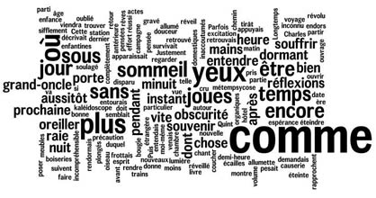

Enoncé
Le but de ce challenge est de trouver les mots qui sont le plus présents dans une série de textes. Cependant, on considère que les mots qui sont présents dans tous les textes (s'il y en a ) ne sont pas intéressants et on ne les prendra donc pas en compte.
Chaque texte est constitué par une séquence de caractères ASCII terminée par le caractère fin de ligne \n. Les sous-séquences de lettres correspondant à des lettres (minuscules ou majuscules) sont considérées comme les mots composant le texte. Les mots sont définis de façon insensible aux minuscules ou majuscules : word, Word ou WORD désignent donc un même mot. Si le jeu de données contient n textes, chaque mot m est donc associé à un nombre de textes n_m compris entre 1 et n. On ne s'intéresse qu'aux mots pour lesquels n_m < n, et l'on veut connaître les 3 mots parmi ceux-ci pour lesquels n_m est maximal. En cas d'égalité de n_m entre plusieurs mots on les affichera en ordre alphabétique.
Format des données
Entrée
Une série de textes séparées par des fins de ligne "/n". Les mots du texte ne comprennent pas de caractère accentué. On entend par mot une série consécutive de lettres minuscules ou majuscules.
Sortie
3 lignes avec sur chaque ligne un entier et un mot séparés par un espace. L'entier correspond au nombre de textes qui incluent ce mot. Les lignes sont triées par nombre de textes décroissant puis en cas d'égalité par mot par ordre alphabétique. Exemple : 3 chemin
2 chevaux
2 livres